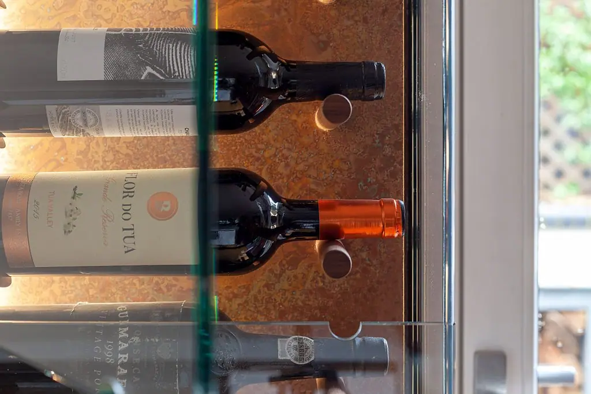
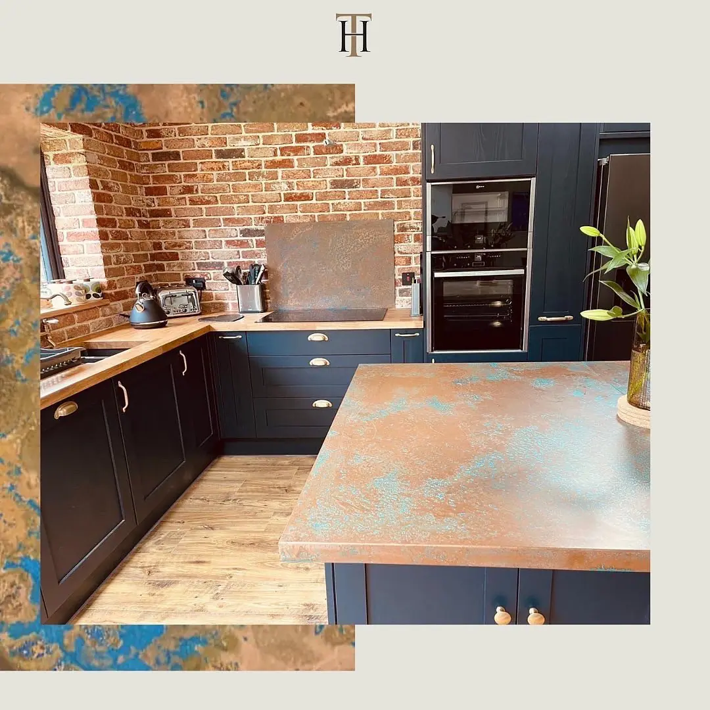
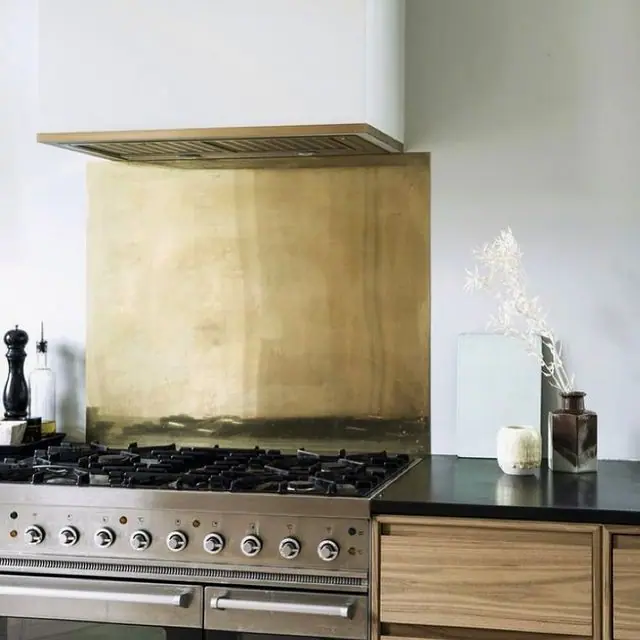

Decorative metal sheets can be made from aged brass , natural brass , aged copper and natural copper . Sheets can be laser cut to any shape or size and for almost any use.
Each of our finishes can be cut anyway you like to create stunning pieces and wall features for your home or office. We can create lettering and signage from our finishes.

Cut to size
You can order our sheets below for standard cutting requirements.

Ready to go
We can provide bespoke cut metal with each of our finishes being wrapped around wood and lacquer finished.
Please use the Request a quote form below
Decorative Metal Sheet Finishes
Our decorative metal sheets have been turned into splashbacks , metal wall coverings, decorative tiles, house and building numbers, company names, metal screens and a number of other products.
There’s nothing you cannot do with a little imagination and the expertise of Halman Thompson!
Contact our team for a free, no-obligation quotation or use the form below.
Our decorative metal sheet range uses the beauty of metal to deliver a truly unique look.
Finishes include:
- Ayrshire finish – Indulgent aged copper finish with a dappled look that delivers a treat for the eyes
- Cheshire finish – Multihued aged copper finish with waves of darker tones throughout the piece
- Hertfordshire finish – Vibrant aged copper finish with a rich, decadent verdigris patina
- Northumberland finish – Characterful aged copper finish with swirls of verdigris that constantly reveal more
- Natural copper finish – Timeless and ever-popular natural copper finish that remains unsurpassed
- Somerset finish –Interesting aged brass finish with variations of dark and light across the surface
- Wiltshire finish – Bright and breezy aged brass finish with an appealing combination of light and dark tones
- Cambridgeshire finish – Thoughtful brass finish that offers genuine depth
- Natural brass finish – Luxurious natural brass finish that keeps this ancient metal up to date and on everyone’s list
Aged or natural metal sheets
All decorative metal sheets from Halman Thompson are hand made in our workshop.
Sheets are laser cut to size and shape before being artificially aged using a specialist process. Once the metal reaches your desired look, we stop the ageing process and seal it inside tough, transparent lacquer.
That lacquer prevents the ageing process from restarting and protects the metal underneath.
Natural brass and copper sheets can be left as bare metal or be lacquered depending on your needs.
Caring for your decorative metal sheets
All decorative metal sheets are designed to be as low maintenance as possible.
Simply use warm soapy water and a soft cloth to remove dirt and debris. Avoid using abrasive or chemical cleaners to preserve the look. That’s it!
Full care instructions are included with each metal sheet.
Contact Halman Thompson for a free, no obligation quotation or complete the form below!
Examples of our decorative work


Examples of our decorative work
Choose a finish






If you can dream it, we’ll make it.
Bars, balustrades, staircases, worktops, cladding and pieces that don’t have a name yet. Our designers and craftspeople work in brass, copper, zinc and steel, and alongside wood.